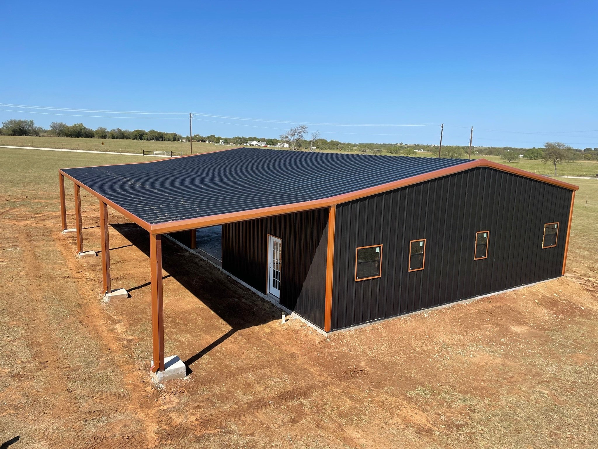
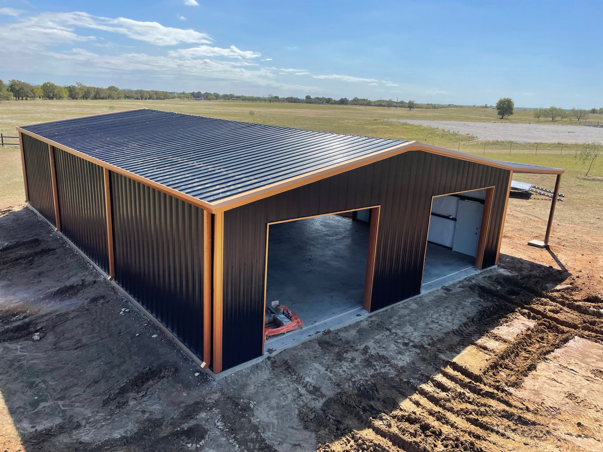
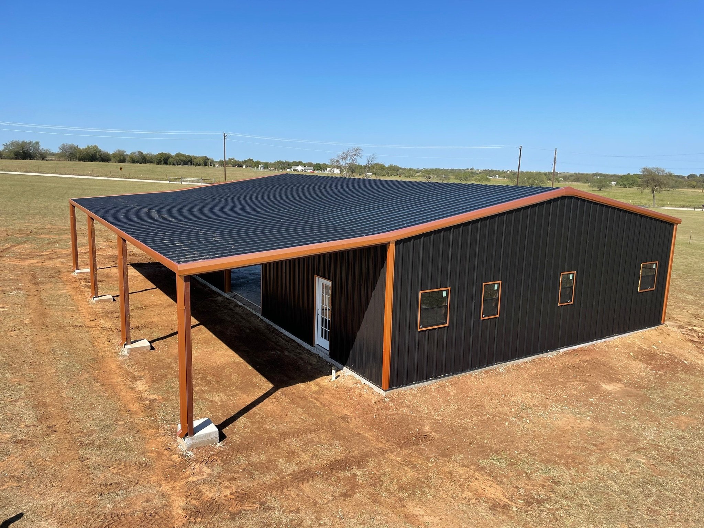
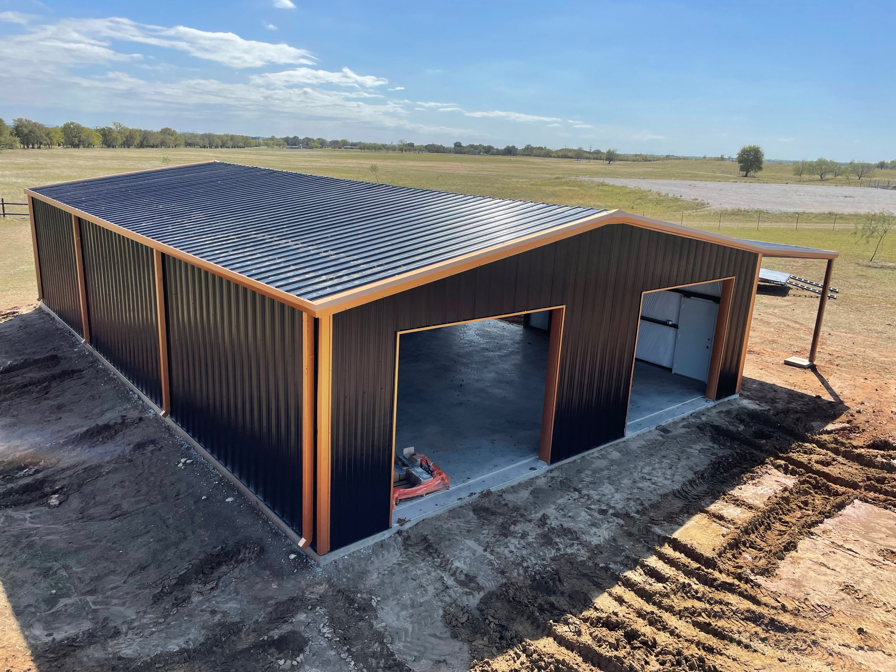

Pipe & Cable Fencing
Perimeter fencing, horse fencing, pipe-and-cable, welded corners, H-braces, and clean line work.
- Schedule 40 posts & rails
- Custom spacing & layout
- Durable weld-up construction
Agriculture & Ranch Welding
Pipe fencing, corrals, working pens, barns, gates, and on-site repairs—built tough for daily use. Serving North Texas & Oklahoma.

 



From new builds to repairs, we build ranch-ready structures that hold up to weather, livestock, and daily work.
Perimeter fencing, horse fencing, pipe-and-cable, welded corners, H-braces, and clean line work.
Panels, alleys, sorting pens, squeeze-chute setups, and high-traffic livestock areas.
Steel-framed barns, run-in shelters, loafing sheds, equipment covers, and add-ons.
Entry gates, pipe gates, cattle guards, and custom access control for ranch drives.
Repairs for trailers, implements, buckets, racks, and farm equipment—on site when possible.
We come to you for ranch repairs, gate fixes, broken hinges, panels, and structural issues.
We talk goals, livestock use, layout, and durability needs. Photos or an on-site visit.
You get a clear scope: materials, timeline, and total cost—no surprises.
We fabricate and install with clean welds and strong bracing built for real ranch use.
We inspect swing, latch, alignment, and finish—then you’re ready to put it to work.
Tell us what you’re building and where you’re located. We’ll follow up fast.